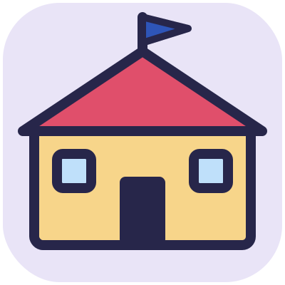
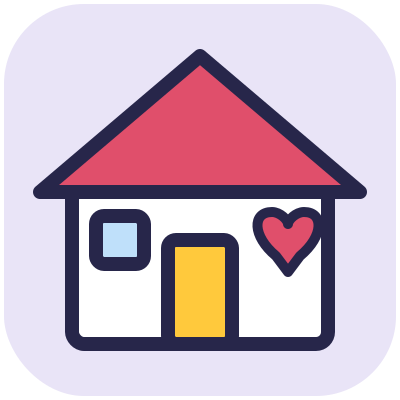

Scintilla e la magia del cinema
Un laboratorio per trasformare i disegni dei bambini in un vero film d'animazione, con la web app Animatoon. Per bambini dai 6 ai 10 anni, a scuola e a casa.

Percorso base
Storia a 3 parti: Inizio, Svolgimento, Conclusione. Per chi gira il primo film.
 PrologoIl respiro dei fogli bianchi
PrologoIl respiro dei fogli bianchi Missione 1La squadra
Missione 1La squadra Missione 2Evocare l'attore principale
Missione 2Evocare l'attore principale Missione 3Il portale invisibile (dietro le quinte)
Missione 3Il portale invisibile (dietro le quinte) Missione 4Costruire il mondo (lo sfondo)
Missione 4Costruire il mondo (lo sfondo) IntermezzoIl finale perduto
IntermezzoIl finale perduto Missione 5La trappola del «E poi?»
Missione 5La trappola del «E poi?» Missione 6Il laboratorio dei rumori segreti
Missione 6Il laboratorio dei rumori segreti Missione 7La bottega dei dialoghi (voci, sussurri e grida)
Missione 7La bottega dei dialoghi (voci, sussurri e grida) Missione 8La notte della prima (titoli di coda e popcorn)
Missione 8La notte della prima (titoli di coda e popcorn)
Livello 2
Storia a 5 parti: Inizio, Problema, Sfida, Colpo di scena, Finale. Per chi ha già girato un film.
 PassaggioRegisti con un film alle spalle
PassaggioRegisti con un film alle spalle Missione 9La storia a cinque parti
Missione 9La storia a cinque parti Missione 10Il cast: quando due attori si incontrano
Missione 10Il cast: quando due attori si incontrano Missione 11La lente magica (grande, piccolo, girato)
Missione 11La lente magica (grande, piccolo, girato) Missione 12Il pittore di sfondi
Missione 12Il pittore di sfondi Missione 13Lo stesso film, tre musiche
Missione 13Lo stesso film, tre musiche Missione 14Il cambio di scena
Missione 14Il cambio di scena Missione 15La seconda ripresa (la proiezione di prova)
Missione 15La seconda ripresa (la proiezione di prova) Missione 16La locandina
Missione 16La locandina

In classeGruppi da quattro, un tablet per gruppo e i quattro mestieri che girano a ogni missione: regia e montaggio, storia e sceneggiatura, disegni e animazione, voci e suoni.

A casaIl bambino è il regista e l'adulto è il complice di scena: il macchinista, il tecnico delle luci, il primo spettatore.
Le parole del cinema
Ciak, dissolvenza, primo piano: ogni parola ha la sua icona.
 Campo lungo
Campo lungo Cast
Cast Ciak
Ciak Colonna sonora
Colonna sonora Colpo di scena
Colpo di scena Dietro le quinte
Dietro le quinte Dissolvenza
Dissolvenza Inquadratura
Inquadratura